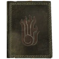
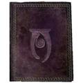
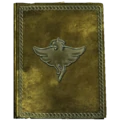
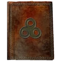
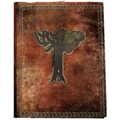

|
|
The Elder Scrolls V Skyrim: МагияМагияЗаклинания мира The Elder Scrolls поделены на несколько магических школ: Основные типы действия заклинанийУрон — понижает уровень основных атрибутов (здоровья, запаса сил и магии), свойств или навыков. Восстанавливается при помощи соответствующих эффектов, таких как благословения в храмах, восстанавливающих заклинаний или зелий. Поглощение — временно или постепенно понижает уровень здоровья, запаса сил, магии, свойства или навыка на протяжении времени и передаёт их заклинателю. Сопротивление — понижает получаемый урон от электричества, холода, огня, магии, обычного оружия или понижает шансы получения отрицательных эффектов. Восстановление — восполняет здоровье, магию и запас сил, а также величину навыков и параметров до нормального уровня. Усиление — аналогично восстановлению, может временно повысить нормальный уровень здоровья, магии и запаса сил, а также эффект навыка. Ослабление — повышает получаемый урон от электричества, холода, огня, магии, обычного оружия или повышает шансы поражения ядом, параличом или болезнью. Отражение — отражает обычный или магический урон на оппонента. Иллюзия — манипулируя сознанием цели, заставляет её считать мага своим союзником, испытать страх или воодушевление. Манипуляция — власть над призывом из планов Обливиона, функциями организма жертвы (паралич), перемещение предметов (телекинез), созданием источников света и алхимическим превращением веществ. МеханикаПрименение заклинаний расходует магию, эквивалент энергии или маны в других играх. Со временем её уровень восстанавливается (от 0 до 100 % без сторонних ускоряющих и/или замедляющих факторов типа чар и болезней — за 20 секунд). Доступный запас магии можно повысить с ростом уровня, а также с помощью зелий, зачарованной экипировки и еды. Дальнобойные заклинания типа «Огненной стрелы», «Страха», «Паралича» инертны, то есть к своей скорости и направлению прибавляют скорость и направление персонажа игрока. Иными словами, если персонаж движется вперёд и применяет дальнобойное заклинание, то его заряд также будет перемещаться быстрее, нежели, чем применение этого же заклинания из стационарного положения. Если персонаж движется назад, то заряд заклинания перемещается медленнее (эффективно для «Ледяной бури»). Если же персонаж двигается в сторону, то заряд заклинания будет перемещаться под углом (↗ или ↖). Для применения заклинания необходима концентрация в течение 1–2 секунд. Мастерские заклинания типа «Бурана», «Огненного шторма», «Защитного круга» требуют от мага полной неподвижности, так как необходима длительная концентрация, лишающая возможности перемещаться. Заклинания-плащи, призванное оружие, быстрое лечение и брони применяются на самого мага и в любом положении. Требуют концентрации. Обереги не требуют концентрации, но нужна некоторая доля секунды, чтобы щит закрепился. Равномерно потребляют ману. Заклинания рун и призыва существ применяются в любом положении на поверхности в допустимом радиусе. Требуют концентрации. Остальные заклинания типа «Пламени», «Ясновидения», «Исцеляющих рук» применяются в любом положении и равномерно потребляют ману. Тома заклинанийТома заклинаний представляют собой учебники, с помощью которых можно изучить одно из заклинаний какой-либо школы магии. Заклинание изучается мгновенно при прочтении и добавляется в арсенал доступных магу. После прочтения книга уничтожается. Повторное прочтение аналогичного тома заклинания ни к чему не приведёт — учебник останется цел, но и магу никакой выгоды. Поэтому тома уже изученных заклинаний годятся только на продажу или для коллекции. Преподаватели Коллегии Винтерхолда, придворные маги и торговцы всякой всячиной продают большинство томов. Кроме того, тома заклинаний можно найти в случайных локациях, украсть/забрать у враждебного мага или создать в кузнице атронахов, используя испорченные книги. Уровень навыка в той или иной школе определяет, какие тома будут продавать торговцы: Тома учеников — 15 уровень навыка. Тома адептов — 40 уровень навыка. Тома экспертов — 65 уровень навыка. Тома мастеров будут доступны только после завершения особых квестов, которые, в свою очередь, будут доступны по достижению 90–100 уровня навыка данной школы магии.  |